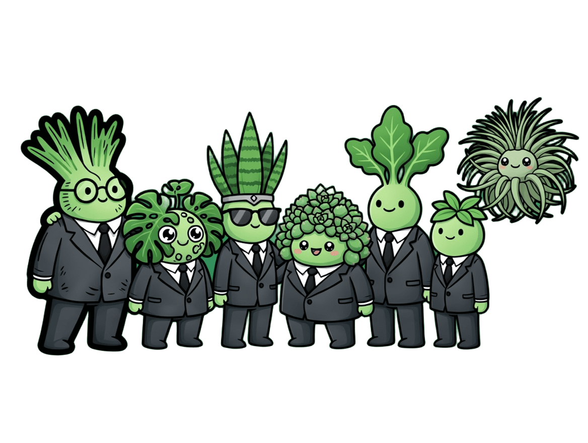

阿蕨與小積的
好朋友們

阿蕨與小積在「蕨積綠色宇宙」裡可不是孤單的兩人組～
他們有一群超有個性的植物好朋友！每個朋友都保留了真實植物特性，是辦公室的植物人，一起推廣綠色生活。
他們有一群超有個性的植物好朋友！每個朋友都保留了真實植物特性，是辦公室的植物人，一起推廣綠色生活。
小龜
Monstera deliciosa
🌿 龜背芋・洞洞西裝
外型：頭上長滿可愛的大洞葉子，像穿了件「洞洞西裝」，眼睛總是好奇地眨啊眨。
個性：超級好奇寶寶、冒險王，愛爬藤、愛探索新事物。
個性：超級好奇寶寶、冒險王，愛爬藤、愛探索新事物。
🏢 團體活動策劃部長
虎妹
Sansevieria trifasciata
⚡ 虎尾蘭・劍葉戰士
外型：頭頂直挺挺的劍狀葉，穿西裝時像女戰士，戴一副酷酷的墨鏡。
個性：超耐操、超獨立，24小時都能「光合作用」。
個性：超耐操、超獨立，24小時都能「光合作用」。
💪 夜間特訓・健身擔當
肉肉
Succulent
🌵 多肉植物・Q彈教主
外型：圓圓胖胖的一顆顆小肉球頭，穿西裝顯得特別Q彈，像個會走路的多肉盆栽。
個性：超會存水、超佛系，講話永遠慢半拍。
個性：超會存水、超佛系，講話永遠慢半拍。
🌸 療癒系吉祥物
琴哥
Ficus lyrata
🎻 琴葉榕・大提琴紳士
外型：高挑的大提琴狀葉子，穿西裝超有型，像個溫文儒雅的音樂家。
個性：文青、愛音樂、講話輕聲細語。
個性：文青、愛音樂、講話輕聲細語。
🎵 辦公室氛圍擔當
空空
Tillandsia
☁️ 空氣鳳梨・漂浮旅人
外型：全身銀灰色細葉，像一團會飛的雲，永遠不用盆栽，直接「漂浮」上班。
個性：自由奔放、零負擔，講話超快。
個性：自由奔放、零負擔，講話超快。
✈️ 跨部門外派特派員
🌱 蕨積辦公室日常 🌱
這些好朋友們平常就在蕨積辦公室一起上班、一起光合作用、一起推廣「植物減碳」的綠色生活理念。
從洞洞西裝小龜到漂浮上班的空空，每個植物人都有獨一無二的綠色超能力，讓每一天充滿療癒與永續的靈感。
從洞洞西裝小龜到漂浮上班的空空，每個植物人都有獨一無二的綠色超能力，讓每一天充滿療癒與永續的靈感。